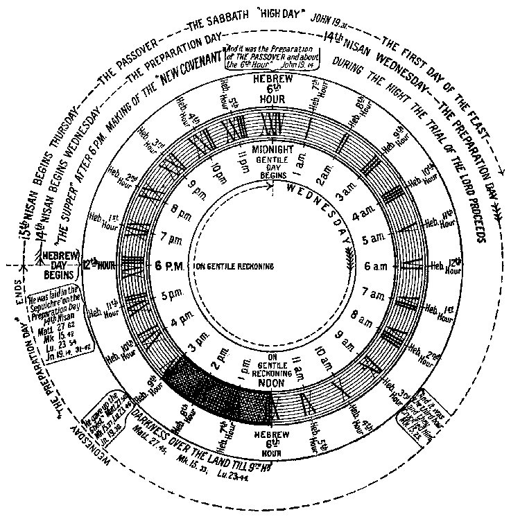

|
The Diagram below shows the 24 hours of the "Preparation Day", i.e. the day before the Passover (John 19:14, &c.). The Four Gospels agree in stating that the Lord was laid in the Sepulcher on the Preparation Day, which was Nisan 14th, immediately before "the High Sabbath", Nisan 15th (Matt. 27:62. Mark 15:42. Luke 23:54. John 19:31, 42). Therefore He must have been crucified on Wednesday, 14th of Nisan (see Ap. 144, 156, 166).  As shown above, the 14th of Nisan, which was the "Preparation Day", began at sunset on our Tuesday (Gentile reckoning). "The sixth hour" of John 19:14 is the sixth hour of the night, and therefore corresponds to midnight, at which, according to Gentile reckoning, Wednesday began. The Roman numerals on the dial plate show the 24 hours of the complete Gentile day. And on either side of the dial are shown the Hebrew "hours" corresponding to the Gentile hours a.m. and p.m. The twenty-four hours were divided into the twelve hours of the night
(reckoned from sunset), and "twelve hours in the day" (reckoned
from sunrise. See John 11:9). Hence "the sixth hour" of John
19:14 was our midnight; "the third hour" of Mark 15:25 was our 9 a.m.;
"the sixth hour" of Matt. 27:45; Mark 15:33; Luke 23:44;
was our noon and the "ninth hour" of Matt. 27:45,46; Mark
15:33.34; Luke 23:44; was our 3 p.m.
|